Intro
사람은 무언가를 인식할 때 가능성을 따집니다. 판단이 확실하지 않으면 가장 그럴듯한 쪽으로 인식합니다. 따라서 패턴 인식 시스템도 이 법칙을 따르지 않을 수 없습니다. 하지만 기계와 사람은 다릅니다. 사람은 판단에 느낌을 동원하지만 컴퓨터는 그럴 수 없습니다. 프로그래밍을 위해서는 수학이 필요합니다.
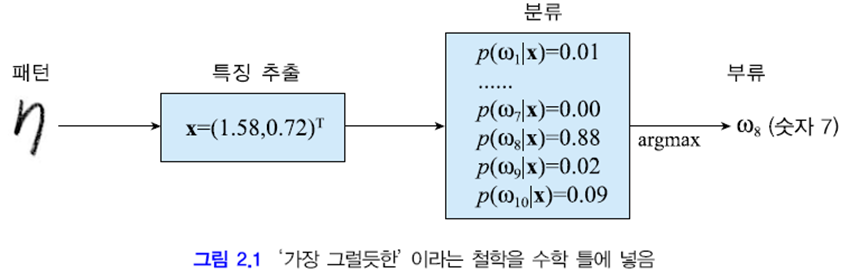
위 그림은 10개 숫자를 분류하는 예제입니다. 입력 패턴으로부터 특징 벡터 x를 추출하고 그것이 wi일 확률 P(wi | x)를 구합니다. 그리고 가장 큰 확률을 가진 부류로 분류합니다.
더 구체적으로 사후 확률 P(wi | x)를 구하는 방법을 이제 설명합니다.
2.1 확률과 통계
2.1.1 확률 기초
주사위
사람 키
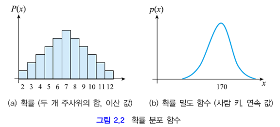
패턴 인식에서는 특징 각각이 랜덤 변수에 해당
확률 실험 (사전 확률, 우도, 사후 확률)
조금 더 복잡한 상황을 생각해 볼까요.
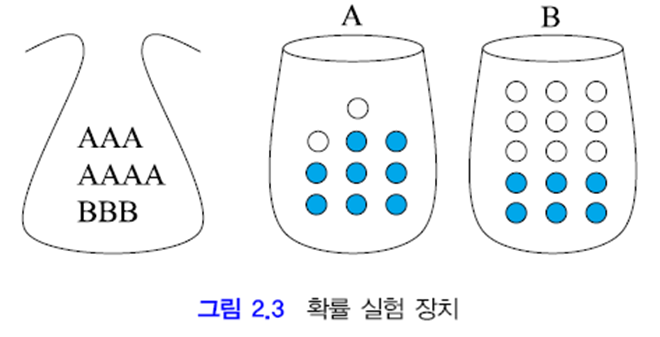
위 그림의 상황으로 관찰 실험을 해 봅시다. 주머니는 상자를 고를 용도입니다. 선택된 상자에서 공을 하나 집어 색깔을 관찰하고 뽑은 것은 다시 집어 넣는 복원 추출을 합니다.
랜덤 변수 두 개를 정의하겠습니다.
용지 X∈{A,B}, 공 Y={파랑, 하양}
1. 상자 A가 선택될 확률은?
주머니에서 A를 뽑을 확률과 같습니다.
P(X=A) = P(A) = 7/10
2. 상자 A에서 하얀 공이 뽑힐 확률은?
A를 뽑았다는 조건 하에 A에서 하얀 공을 뽑을 확률입니다.
조건부 확률 P(Y=하양|X=A) = P(하양|A) = 2/10
3. 상자는 A이고 공은 하양이 뽑힐 확률은?
주머니에서 A를 뽑고 동시에 A에서 하얀 공을 뽑을 확률입니다. 확률의 곱으로 구할 수 있습니다.
결합 확률 P(A, 하양) = P(하양|A)P(A) = (2/10)(7/10) = 7/50
4. 하얀 공이 나올 확률은?
A를 고르고 하얀 공을 뽑을 확률과, B를 고르고 하얀 공을 뽑을 확률의 합입니다.
주변 확률 P(하양) = P(하양|A)P(A)+P(하양|B)P(B) = (2/10)(7/10)+(9/15)(3/10) = 8/25
P(X,Y) = P(X)P(Y)이면 X와 Y는 독립
두 랜덤 변수가 서로 영향을 미치지 못하면 둘은 독립입니다.
위의 예제는 P(X,Y)≠P(X)P(Y)이므로 독립이 아닙니다. 즉, 주머니가 공의 색깔에 영향을 미치고 있는 것입니다.
P(X)를 사전 확률(prior probability)이라고 부름
문제를 반대로
- 생각 1
- 생각 2
베이즈 정리
앞서 설명한 결합 확률과 곱 규칙에 따라 베이즈 정리를 유도할 수 있습니다.
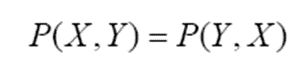
위 식을 곱 규칙을 이용해 바꾸면 아래와 같습니다.
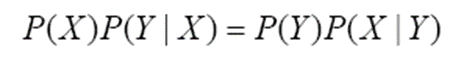
위 식을 정리하면 아래와 같습니다. 아래 식은 2.2절에서 베이지안 분류기를 만드는 데 꼭 필요하므로 기억해야 합니다.
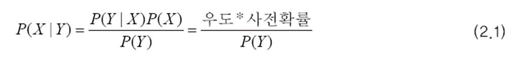
베이즈 정리를 이용해 사후 확률을 계산해 보겠습니다.
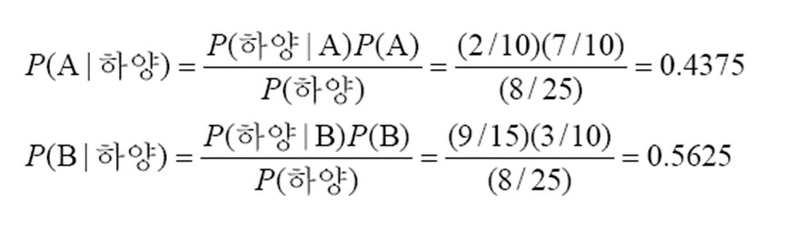
계산 결과 P(B|하양)이 더 큰 것을 알 수 있습니다. 따라서 하얀 공은 B에서 나왔을 가능성이 더 크다고 말할 수 있습니다.
위의 결과에 따르면, 신뢰도 0.5625로 B에서 나왔다고 대답할 수도 있습니다. 이와 같인 신뢰도를 제공할 수 있는 것도 장점입니다.
2.1.2 평균과 분산
평균 벡터와 공분산 행렬
평균 벡터를 구하는 식은 다음과 같습니다.
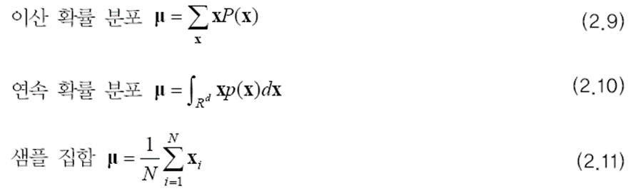
R^d는 d 차원 실수 공간을 뜻합니다.
랜덤 벡터의 i 번째 요소 xi의 분산도 필요하지만 xi와 xj 사이의 공분산도 중요한 통계적 특성입니다.
공분산 행렬은 다음과 같습니다.
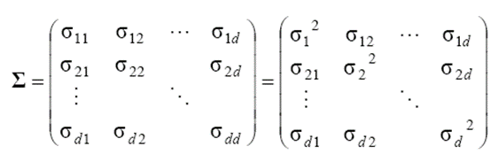
공분산은 다음 식과 같이 구할 수 있습니다.
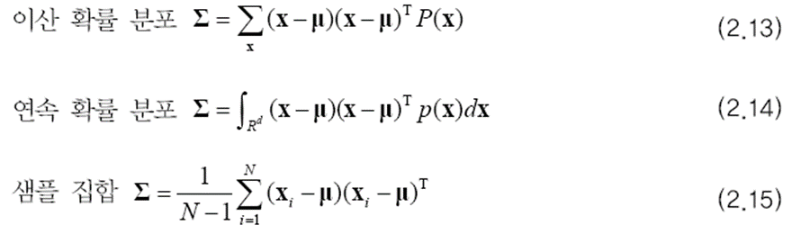
공분산은 랜덤 변수간의 관계를 표현합니다.
두 랜덤 변수가 같이 커지고 같이 작아지는 경향을 가졌다면 둘의 공분산은 양수를 갖고, 반대의 경우는 음수를 갖게 됩니다. 경향이 강할수록 값의 절댓값은 더 커집니다. 공분산이 0에 가까우면 상관 관계가 적다는 뜻입니다. 공분산이 0이면 두 변수는 독립입니다.
예제 2.3
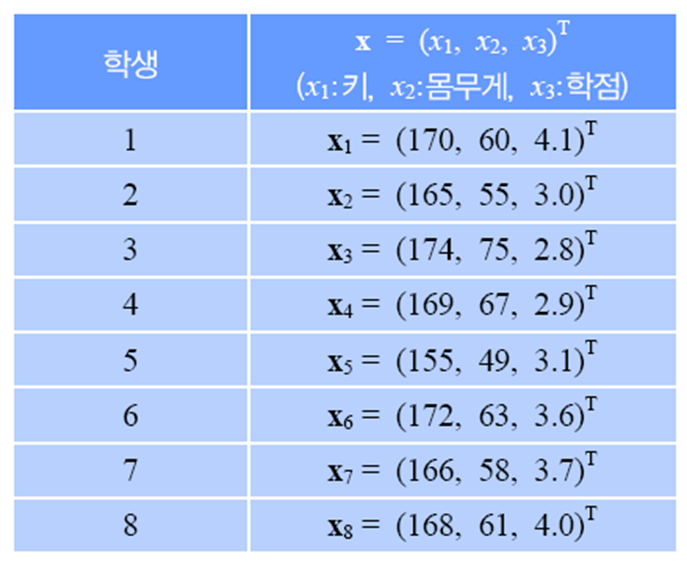
평균 벡터는 아래와 같습니다.
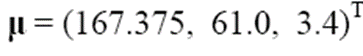
공분산 행렬을 구하기 위해 첫 번째 샘플에 대한 예시를 보이겠습니다.
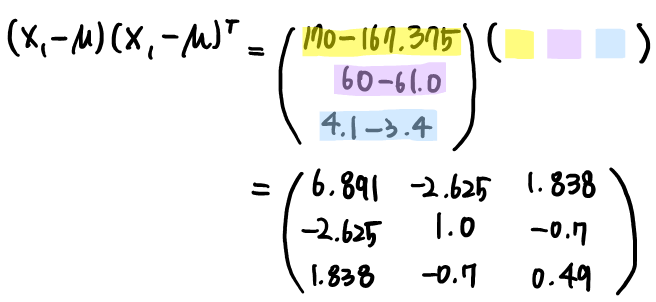
8개의 샘플에 대해 모두 위의 과정을 반복하고 평균을 구하면 아래와 같은 공분산 행렬을 얻을 수 있습니다.
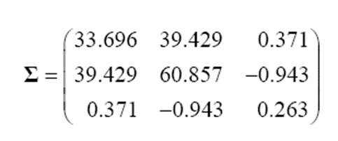
2.1.3 확률 분포의 표현과 추정
이산인 경우
연속인 경우
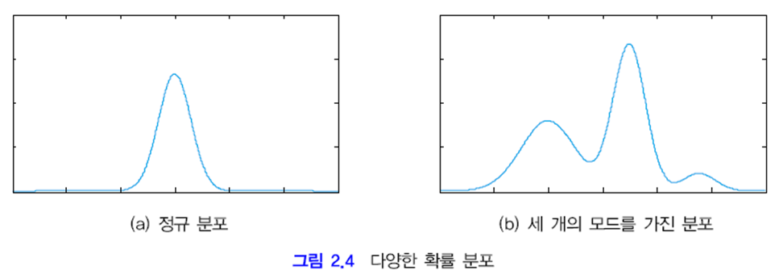
(a) 같은 정규 분포에서는 평균과 분산만 설정하면 근사화해서 표현할 수 있고 차원의 저주를 피할 수 있습니다.
하지만 (b)와 같이 세개의 모드*를 가진 확률 분포라면 간단히 표현할 수 없는 문제가 있고 이 문제는 3장에서 다뤄집니다.
* 모드 mode: 최빈값
이후 내용과 ppt는 새로운 글로 쓰도록 하겠습니다.
출처:
패턴인식 - 오일석